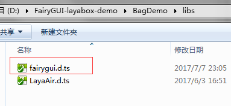
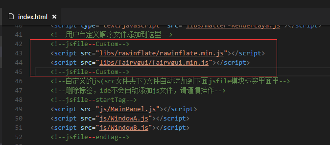
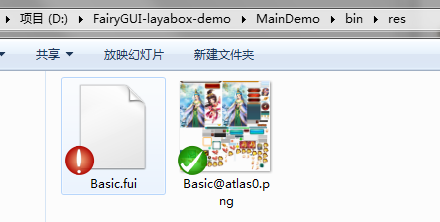

赞助
Guide
Guide

在LayaAir中使用FairyGUI
TS/JS版本
将FairyGUI库以及依赖的rawinflate库拷贝到bin/libs目录

把fairygui.d.ts拷贝到libs目录。

在index.html里添加上述两个库的引用，注意放置的位置。

注：FairyGUI只依赖laya.core， laya.html两个模块，不需要laya.ui。
使用FairyGUI编辑器完成UI编辑。发布目录请选择Laya工程的bin/res目录（当然其他目录也是可以的）。发布后得到两个（或以上）文件。

在程序启动时（或者在需要用到这些UI的适当地方）加载这两个文件，并完成初始化。
// 程序入口class GameMain {constructor(){Laya.init(1136, 640, Laya.WebGL);laya.utils.Stat.show(0, 0);//设置适配模式Laya.stage.scaleMode = "showall";Laya.stage.alignH = "left";Laya.stage.alignV = "top";//设置横竖屏Laya.stage.screenMode = "horizontal";Laya.loader.load([{ url: "res/Basic@atlas0.png", type: Loader.IMAGE },{ url: "res/Basic.fui", type: Loader.BUFFER }], Handler.create(this, this.onLoaded));}onLoaded(): void {Laya.stage.addChild(fairygui.GRoot.inst.displayObject);fairygui.UIPackage.addPackage("res/Basic");fairygui.UIConfig.defaultFont = "宋体";fairygui.UIConfig.verticalScrollBar = "ui://Basic/ScrollBar_VT";fairygui.UIConfig.horizontalScrollBar = "ui://Basic/ScrollBar_HZ";fairygui.UIConfig.popupMenu = "ui://Basic/PopupMenu";fairygui.UIConfig.buttonSound = "ui://Basic/click";new MainPanel();}}
AS版本
- 从GITHUB中拉FairyGUI layabox SDK的源代码，放到你的源码工程里。
- 在index.html里加入rawinflate.min.js，注意要放在你的js前。